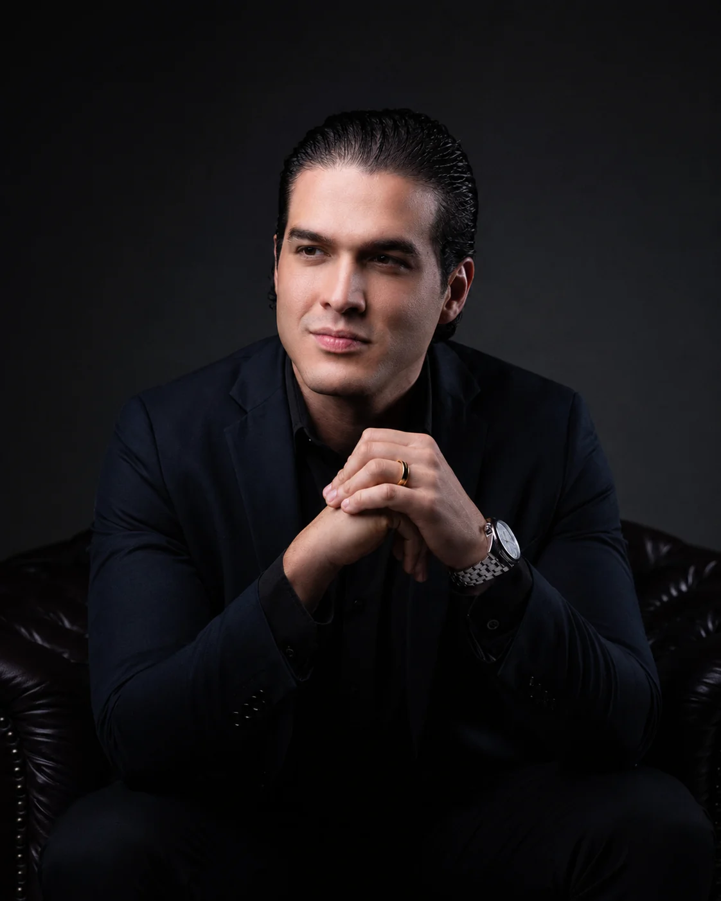
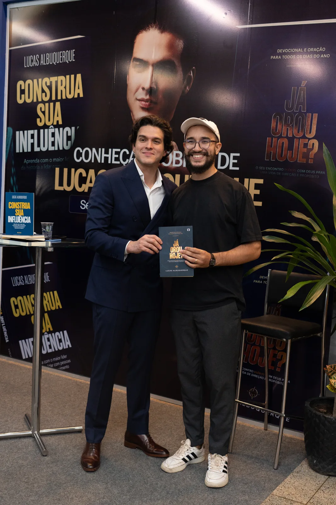

Identidade
Em um dia, o líder muda.
- Domínio das próprias emoções
- Clareza para decidir sob pressão
- Presença e comunicação
Todo mundo treina o líder para fazer. A Legado Leader forma o líder para ser: governar as próprias emoções, comunicar com impacto e conduzir pessoas com maturidade.

A Legado Leader é o lugar onde o líder é formado, cuidado e ativado. Daqui pra frente, a empresa cresce pelas pessoas que você forma.
Em um dia, o líder muda.
Em alguns meses, a cultura muda.
Em um ano, a empresa muda.
Nada aqui é assistido de longe. É sala cheia, conversa de verdade e empresários se ajudando a crescer.


Você resolve quase tudo e sente que o time não acompanha o seu ritmo.
Existe uma conversa difícil sendo adiada há semanas.
O time cresceu e a cultura não acompanhou.
Você tem gente muito boa entregando menos do que poderia.
Nada disso é falta de competência. É liderança que ainda não foi formada.
Cada etapa termina em algo aplicado no seu negócio. A primeira entrega é o Mapa do Legado, construído no Método Construa para colocar em prática na segunda-feira.
Para quem já lidera pessoas e precisa formar um time capaz de carregar a empresa, o movimento ou a causa.
O primeiro passo é o Método Construa.
Converse com a equipe para entender o formato adequado à sua operação.
Em Alphaville, no dia 28 de novembro.
Em Alphaville. Quer levar a escola para a sua empresa ou entrar no Conselho? A gente marca uma conversa.